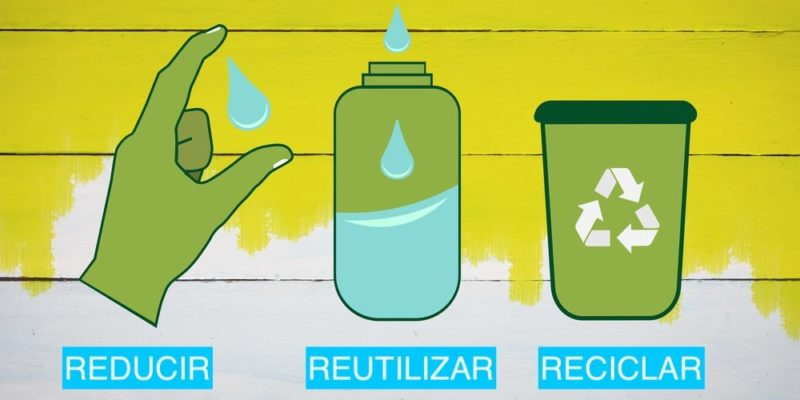

Las tres R son reducir, reutilizar y reciclar, un principio ambiental propuesto para
la gestión sostenible de recursos y residuos. Su objetivo es promover un consumo más
responsable y minimizar el impacto ambiental de las actividades humanas a través de la reducción de
la cantidad de desechos que se generan.
La regla de las tres R se popularizó a nivel mundial durante la década de 1990, cuando la
preocupación por el impacto ambiental y la gestión de los residuos se convirtió en un tema
central de la agenda internacional. Fue impulsada por organizaciones no gubernamentales como
Greenpeace, por organismos como las Naciones Unidas y por distintos gobiernos nacionales.
Lo que se propone la regla de las tres R es reducir la cantidad de desechos que se producen
a partir de tres hábitos principales:

Reducir significa disminuir, aminorar, hacer más pequeño o simplificar algo en tamaño, cantidad, duración o intensidad, según la Real Academia Española (RAE). El término proviene del latín reducĕre (formado por re-, «hacia atrás», y ducere, «conducir»).
Reutilizar (o reusar) consiste en volver a utilizar un objeto o material dándole una segunda vida útil, ya sea con su función original o con un propósito diferente, sin necesidad de someterlo a un proceso industrial de transformación
El reciclaje es el proceso de recolectar, separar y transformar materiales que ya cumplieron su vida útil para convertirlos en nueva materia prima o productos, lo que reduce la extracción de recursos naturales y disminuye la contaminación
Inicio